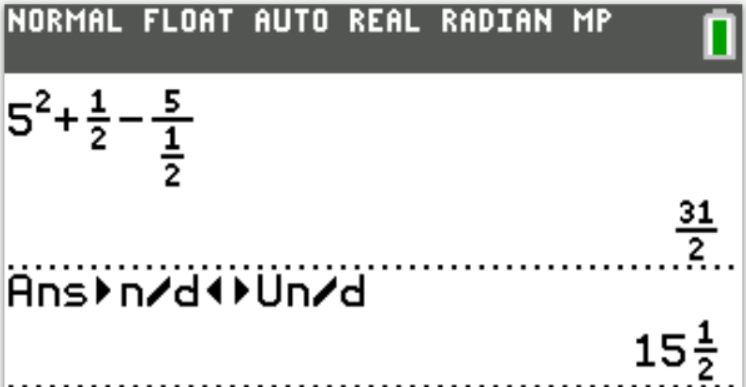
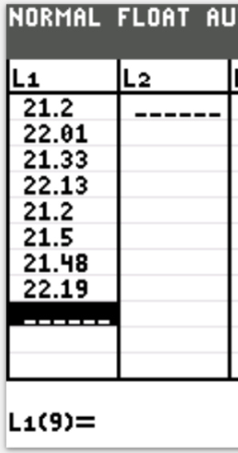
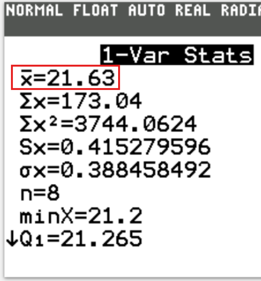

I greet you this day,
These are the solutions to the Enhanced American College Testing (ACT) Mathematics Tests.
If you find these resources valuable and if any of these resources were helpful in your passing the
the test, please consider making a donation:
Your donation is appreciated.
Comments, ideas, areas of improvement, questions, and constructive criticisms are welcome.
Feel free to contact me. Please be positive in your message.
I wish you the best.
Thank you.
MATHEMATICS TEST
60 Minutes — 60 Questions
DIRECTIONS: Solve each problem, choose the correct answer, and then fill in the corresponding oval on your
answer document.
Do not linger over problems that take too much time.
Solve as many as you can; then return to the others in the time you have left for this test.
You are permitted to use a calculator on this test. You may use your calculator for any problems you choose, but
some of the problems may best be done without using a calculator.
Note: Unless otherwise stated, all of the following should be assumed.
(1.) Illustrative figures are NOT necessarily drawn to scale.
(2.) Geometric figures lie in a plane.
(3.) The word line indicates a straight line.
(4.) The word average indicates arithmetic mean.
(1.) Algebra Transformations: A point at $(-4, 10)$ in the standard $(x, y)$ coordinate plane is
translated right 10 coordinate units and down 4 coordinate units.
What are the coordinates of the point after the translation?
(4.) Arithmetic Expressions: A company reimburses its employees for use of a personal vehicle for
company travel at the rate of $10.00 per day plus $0.445 per mile.
Jorge, an employee of the company, traveled exactly 120 miles on Monday and exactly 100 miles on Tuesday using
his personal vehicle for company travel.
For these 2 days, what was the amount of Jorge's reimbursement?
$
\$10 \text{ per day for 2 days } = 10(2) = \$20 \\[3ex]
\$0.445 \text{ per mile for 120 miles } = 0.445(120) = \$53.4 \\[3ex]
\$0.445 \text{ per mile for 100 miles } = 0.442(100) = \$44.5 \\[3ex]
\text{Amount of Jorge's reimbursement} \\[3ex]
= 20 + 53.4 + 44.2 \\[3ex]
= \$117.90
$
(5.) Binary Operations: Given that $a \triangle b = a^2 + b - \dfrac{a}{b}$, what is the value of $a
\triangle b$ when $a = 5$ and $b = \dfrac{1}{2}$
$
a \triangle b = a^2 + b - \dfrac{a}{b} \\[5ex]
a \triangle b = a^2 + b - (a \div b) \\[5ex]
5 \triangle \dfrac{1}{2} \\[5ex]
= 5^2 + \dfrac{1}{2} - \left(5 \div \dfrac{1}{2}\right) \\[5ex]
= 25 + \dfrac{1}{2} - \left(5 * \dfrac{2}{1}\right) \\[5ex]
= \dfrac{50}{2} + \dfrac{1}{2} - \dfrac{20}{2} \\[5ex]
= \dfrac{50 + 1 - 20}{2} \\[5ex]
= \dfrac{31}{2} \\[5ex]
= 15\dfrac{1}{2}
$

(6.) Before opening her lemonade stand, Haley purchased lemonade mix for $2.30 and a package of
cups for $1.50.
Haley sells each cup of lemonade for $0.50.
Which of the following expressions gives Haley’s total profit, in dollars, from selling x cups of
lemonade?
(7.) Trigonometry: Triangles: In $\triangle ABC$, the measure of $\angle B$ is 90°, and the measure
of $\angle A$ is 4 times the measure of $\angle C$.
What is the measure of $\angle C$?
$
\underline{\text{Given}} \\[3ex]
\angle B = 90^\circ \\[3ex]
\angle A = 4 * \angle C \quad\dots\text{Given} \\[5ex]
\angle A + \angle B + \angle C = 180^\circ \quad\dots\text{sum of angles of a triangle} \\[3ex]
4 * \angle C + 90 + \angle C = 180 \\[3ex]
5\angle C = 180 - 90 \\[3ex]
\angle C = \dfrac{90}{5} \\[5ex]
\angle C = 18^\circ
$
(8.) Linear Inequalities: The Sheffield High School girls’ softball team currently has a record of 11
wins, 8 losses, and 0 ties.
What is the least number of its remaining 14 games the team must win to finish the season winning
more than 50% of all the team’s games?
$
11\text{ wins} \\[3ex]
8\text{ losses} \\[3ex]
0\text{ ties} \\[3ex]
14\text{ remaining games} \\[3ex]
\text{Total number of games} = 11 + 8 + 14 = 33 \\[3ex]
50\%\text{ of all the team's games} \\[3ex]
= \dfrac{50}{100} * 33 \\[5ex]
= \dfrac{33}{2} \\[5ex]
$
Let the least number of its remaining 14 games the team must win to finish the season winning
more than 50% of all the team’s games = x
$
11 + x \gt \dfrac{33}{2} \\[5ex]
2(11 + x) \gt 33 \\[3ex]
22 + 2x \gt 33 \\[3ex]
2x \gt 33 - 22 \\[3ex]
2x \gt 11 \\[3ex]
x \gt \dfrac{11}{2} \\[5ex]
x \gt 5.5 \\[3ex]
x \ge 6 \\[3ex]
\text{Least number} = 6 \\[3ex]
$
To finish the season winning more than 50% of all the team’s games, the team must win at least 6
games.
(9.) Linear Functions: A line in the standard (x, y) coordinate plane passes through the point
(3, 4).
The slope of the line:
A. is positive. B. is zero. C. is negative. D. is undefined. E. cannot be determined from the given information.
Only one point is insufficient to determine the nature of the slope.
The slope of the line cannot be determined from the given information.
(10.) Probability: The probability that a certain basketball player will make any given free throw is
0.8.
Based on this probability, how many free throws should this player expect to have to attempt in order to make
20 free throws?
(11.) Measurements and Units: Jerrica drives to and from school once per day in a car that travels 20
miles on 1 gallon of gas.
A trip from Jerrica’s house to school and back is 6 miles.
Gas costs $5 per gallon.
Suppose Jerrica rides her bike to and from school for 10 school days.
How much money will Jerrica save on gas by not driving to and from school those days?
(13.) Trigonometry: A 5-foot awning extends 2 feet horizontally over the entrance to the vertical
building shown below.
Which of the following expressions has a value equal to the measure of the angle θ between the building
and the awning?
The rate of change of y with respect to x is the slope of the function.
Let us represent the function in slope–intercept form so that we can determine the slope.
Use the following information to answer questions 14 – 16.
The results for the 200-meter dash at the Shamrock High School (SHS) track meet are shown in the table below.
The SHS track is unique in that it is circular and has an outer diameter of 240 meters.
The stadium has a capacity of 5,000 people.
200-meter dash
Name
Time (seconds)
Anthony
Burke
Cory
Kate
Lindsey
Nathan
Rebecca
Sam
21.20
22.01
21.33
22.13
21.20
21.50
21.48
22.19
(14.) Statistics: What is the mean, in seconds, of the times listed in the table for the 200-meter
dash?
Because of time, I suggest you use this approach to check your work (if you have time).


(15.) Fractions, Decimals, and Percents: Each ticket for the track meet had a price of $8.
Tickets were sold for exactly 85% of the stadium's capacity.
How many dollars did SHS collect through ticket sales for this meet?
$
\text{Stadium's capacity} = 5000\text{ people} \\[3ex]
\text{Price of ticket} = \$8 \\[3ex]
\text{Number of tickets} = 85\% \text{ of the stadium's capacity} \\[3ex]
= \dfrac{85}{100} * 5000 \\[5ex]
= 4250\text{ tickets} \\[5ex]
4250\text{ tickets @ } \$8 \text{ per ticket} = 4250(8) = \$ 34,000
$
(16.) Mensuration: The circular region containing the track and the infield (the grassy region enclosed
by the track) is divided into sectors that each have a central angle of 60°.
Each sector is a different color.
What is the area, in square meters, of each sector?
(17.) System of Linear Inequalities: The solution set of the system of inequalities below includes
which of the following (x, y) pairs?
$$
x \gt y \\[3ex]
x + y \gt 3
$$
$
A.\;\; (0, 4) \\[3ex]
B.\;\; (1, 3) \\[3ex]
C.\;\; (2, 1) \\[3ex]
D.\;\; (3, 0) \\[3ex]
E.\;\; (4, 1) \\[3ex]
$
Let us review each option to find the correct answer.
Note thet the correct pair must satisfy both inequalities.
$
\underline{\text{Process of Elimination}} \\[3ex]
\text{Testing each } (x, y) \text{ pair} \\[3ex]
\text{1st Inequality: } x \gt y \\[3ex]
(0, 4) \implies 0 \gt 4 \quad\dots\text{Not true, Discard} \\[3ex]
(1, 3) \implies 1 \gt 3 \quad\dots\text{Not true, Discard} \\[3ex]
(2, 1) \implies 2 \gt 1 \quad\dots\text{okay} \\[3ex]
(3, 0) \quad\dots\text{okay} \\[3ex]
(4, 1) \quad\dots\text{okay} \\[5ex]
\text{2nd Inequality: } x \gt y \\[3ex]
x + y \gt 3 \\[3ex]
(2, 1) \implies 2 + 1 \gt 3 \quad\dots\text{Not true, Discard} \\[3ex]
(3, 0) \implies 3 + 0 \gt 3 \quad\dots\text{Not true, Discard} \\[3ex]
$
The correct answer is option E.
But if you want to confirm:
(18.) Mensuration: The area of the trapezoid shown below is 20 square feet, the height is 5 feet, and
the length of one base is 2 feet.
What is b, the length of the other base, in feet?
$
\text{Area of the trapezoid} = \dfrac{h(a + b)}{2} \\[5ex]
\text{where} \\[3ex]
h = \perp\text{height} = 5\;feet \\[3ex]
a = \text{length of one base} = 2\;feet \\[3ex]
b = \text{length of the other base} = ? \\[3ex]
\text{Area} = 20\;ft^2 \\[3ex]
\implies \\[3ex]
20 = \dfrac{5(2 + b)}{2} \\[5ex]
5(2 + b) = 20(2) \\[3ex]
2 + b = \dfrac{20(2)}{5} \\[5ex]
2 + b = 8 \\[3ex]
b = 8 - 2 \\[3ex]
b = 6\;feet
$
(19.) Mensuration: A square and a rectangle have the same area.
The length of the rectangle is 196 centimeters, and the width of the rectangle is 4 centimeters.
What is the length, in centimeters, of a side of the square?
$
y = -0.5x + 4...eqn.(1) \\[3ex]
3x + 6y = 24...eqn.(2) \\[3ex]
\text{From } eqn.(2) \\[3ex]
6y = -3x + 24 \\[3ex]
y = -\dfrac{3}{6}x + \dfrac{24}{6} \\[5ex]
y = -0.5x + 4 \quad\dots\text{modified form of } eqn.(2) \\[3ex]
$
We notice that eqn.(1) and eqn.(2) are the same.
So, we are saying the same thing.
Hence, the system has infinitely many solutions.
(25.)
Linear relationship implies that we shall use the equation of a straight line
We shall use the equation of a straight line in point–slope form and slope intercept form.
$
\underline{\text{Linear Relationship}} \\[3ex]
\text{Point 1: } (6.50, 107) \\[3ex]
x_1 = 6.5 \\[3ex]
y_1 = 107 \\[5ex]
\text{Point 2: } (11.00, 65) \\[3ex]
x_2 = 11 \\[3ex]
y_2 = 65 \\[5ex]
\text{slope, } m = \dfrac{y_2 - y_1}{x_2 - x_1} \\[5ex]
m = \dfrac{65 - 107}{11 - 6.5} \\[5ex]
m = -\dfrac{42}{4.5} \\[5ex]
m = -9.3\bar{3} \\[5ex]
\underline{\text{Point–Slope Form}} \\[3ex]
y - y_1 = m(x - x_1) \\[3ex]
y - 107 = -9.33\bar{3}(x - 6.5) \\[3ex]
y - 107 = -9.3\bar{3}x + 60.6\bar{6} \\[5ex]
\underline{\text{Slope–Intercept Form}} \\[3ex]
y = -9.3\bar{3}x + 60.6\bar{6} + 107 \\[3ex]
y = -9.3\bar{3}x + 167.6\bar{6} \\[5ex]
\text{Let us test each option and eliminate incorrect ones} \\[3ex]
\text{1st option: } x = \$5.00 \\[3ex]
y = -9.3\bar{3}(5) + 167.6\bar{6} \\[3ex]
y = 121\text{ lunch specials} \\[3ex]
121 \ne 82 \quad\dots\text{Discard} \\[5ex]
\text{2nd option: } x = \$6.00 \\[3ex]
y = -9.3\bar{3}(6) + 167.6\bar{6} \\[3ex]
y = 111.6\bar{6}\text{ lunch specials} \\[3ex]
111.6\bar{6} \approx 111 \quad\dots\text{rounded down...Keep} \\[5ex]
\text{3rd option: } x = \$7.50 \\[3ex]
y = -9.3\bar{3}(7.5) + 167.6\bar{6} \\[3ex]
y = 97.6\bar{6}\text{ lunch specials} \\[3ex]
97.6\bar{6} \ne 102 \quad\dots\text{Discard} \\[5ex]
\text{4th option: } x = \$12.50 \\[3ex]
y = -9.3\bar{3}(12.5) + 167.6\bar{6} \\[3ex]
y = 51\text{ lunch specials} \\[3ex]
51 \ne 74 \quad\dots\text{Discard} \\[5ex]
\text{5th option: } x = \$15.00 \\[3ex]
y = -9.3\bar{3}(15) + 167.6\bar{6} \\[3ex]
y = 27.6\bar{6}\text{ lunch specials} \\[3ex]
27.6\bar{6} \approx 28 \quad\dots\text{rounded normal or rounded up...Keep}
$
(26.)
$
x(x + 3) = 108 \\[3ex]
x^2 + 3x - 108 = 0 \\[3ex]
(x + 12)(x - 9) = 0 \\[3ex]
x + 12 = 0 \hspace{1em}\text{OR}\hspace{1em} x - 9 = 0 \quad\dots\text{Zero Product Property} \\[3ex]
x = -12 \quad\dots\text{Discard because the width cannot be negative} \\[3ex]
x = 9 \quad\dots\text{Keep because the width is positive} \\[3ex]
x = 9\;ft
$
Because the inequality does not contain an equal sign, the line will be a dashed line.
$
y \gt 5x - 3 \\[5ex]
\text{When } x = 0 \\[3ex]
y \gt 5(0) - 3 \\[3ex]
y \gt -3 \\[5ex]
\text{When } x = 1 \\[3ex]
y \gt 5(1) - 3 \\[3ex]
y \gt 5 - 3 \\[3ex]
y \gt 2 \\[5ex]
$
The graph of the inequality is
If you want to play with this some more, we can also use another approach.
$
\text{When } y = 2 \\[3ex]
2 \gt 5x - 3 \\[3ex]
5x - 3 \lt 2 \\[3ex]
5x \lt 2 + 3 \\[3ex]
5x \lt 5 \\[3ex]
x \lt 1 \\[3ex]
$
Student: Mr. C, wait a minute.
Why did you not do when $y = 0$?
Is there any reason for using 2? Teacher: Good observation.
If we used 0, we would end up with a fraction.
Fractions are not allowed in the graph that we are given.
Hence, it is necessary that we use a value of $y$ that will give an integer value of $x$ within the domain
[-7, 7]
What other values could we have used? Student: 7
–2 Teacher: There you go...
The domain is the set of all the input values, x for which the function has an output.
The closed circle represents a closed interval. It shows that the end point is included.
On the graph, it is on the right hand side at x = 5
The arrow represents infinity
On the graph, it is on the left hand side and represents negative infinity.
So, the interval notation is: $(-\infty, 5]$
This represents all real numbers less than or equal to 5.
(33.)
The function is an exponential function because the exponent, x is a variable and the base,
$\dfrac{1}{3}$ is a constant.
So, we select the Exponential tool.
$
y = f(x) = 6\left(\dfrac{1}{3}\right)^x \\[5ex]
\text{ When } x = 0 \\[3ex]
y = 6\left(\dfrac{1}{3}\right)^0 \\[5ex]
y = 6 * 1 \\[3ex]
y = 6 \\[3ex]
\text{Point 1: } (0, 6) \\[5ex]
\text{ When } x = 1 \\[3ex]
y = 6\left(\dfrac{1}{3}\right)^1 \\[5ex]
y = 6 * \dfrac{1}{3} \\[5ex]
y = 2 \\[3ex]
\text{Point 2: } (1, 2) \\[3ex]
$
The graph of the exponential function is:
(34.)
$
\text{The perimeter of a rectangular garden is 48 meters.} \\[3ex]
Perimeter = 2(length + width) \\[3ex]
2(y + x) = 48 \\[3ex]
2y + 2x = 48 \\[3ex]
2x + 2y = 48 ...eqn.(1) \\[5ex]
\text{The length is 6 meters more than twice the width} \\[3ex]
y = 6 + 2x \\[3ex]
y = 2x + 6 ...eqn.(2)
$
(35.)
The graph has a positive slope.
So, Options A. and B. are discarded.
The graph has a y-intercept of 4
This implies that the graph intersects the y-axis at 4.
Option C is eliminated.
The domain is the set of all the input values, x for which the function has an output.
The closed circle represents a closed interval. It shows that the endpoint is included.
On the graph:
The closed circle on the left hand side is at x = 0
The closed circle on the right hand side is at x = 10
The interval notation is: [0, 10]
The set notation is: Domain = $\{x: 0 \le x \le 10 \}$
(38.)
$
\underline{\text{Inequality 1}} \\[3ex]
\text{This is a dashed line because of the absence of the equality sign} \\[3ex]
y \lt x + 4 \\[3ex]
\text{When } x = 0 \\[3ex]
y \lt 0 + 4 \\[3ex]
y \lt 4 \\[3ex]
\text{When } y = 0 \\[3ex]
0 \lt x + 4 \\[3ex]
x + 4 \gt 0 \\[3ex]
x \gt 0 - 4 \\[3ex]
x \gt -4 \\[5ex]
\underline{\text{Inequality 2}} \\[3ex]
\text{This is a solid line because of the presence of the equality sign} \\[3ex]
y \le -2x - 2 \\[3ex]
\text{When } x = 0 \\[3ex]
y \le -2(0) - 2 \\[3ex]
y \le 0 - 2 \\[3ex]
y \le -2 \\[3ex]
\text{When } y = 0 \\[3ex]
0 \le -2x - 2 \\[3ex]
-2x - 2 \ge 0 \\[3ex]
-2x \ge 0 + 2 \\[3ex]
-2x \ge 2 \\[3ex]
x \le \dfrac{2}{-2} \\[5ex]
x \le -1 \\[3ex]
$
To graph a system of inequalities, each inequality is shaded and the solution is where the shaded regions
overlap.
$
x + y = -8...eqn.(1) \\[3ex]
2x + 2y = 10...eqn.(2) \\[3ex]
\text{From } eqn.(2) \\[3ex]
2(x + y) = 10 \\[3ex]
x + y = \dfrac{10}{2} \\[5ex]
x + y = 5 \quad\dots\text{modified form of } eqn.(2) \\[3ex]
$
We notice that eqn.(1) and eqn.(2) are the same on the Left Hand Side (LHS) but give different results on
the Right Hand Side (RHS).
This is an inconsistent system.
Hence, the system has no solution.
Each year the bank will add interest to te account, which will increase the account's value by 0.5%.
This implies that the interest is being compounded.
We can solve the question using at least three approaches.
Use any approach you prefer.
$
0.5\% = \dfrac{0.5}{100} = 0.005 \\[5ex]
\underline{\text{1st Approach: Exponential Growth Function}} \\[3ex]
A = a(1 + r)^t \\[3ex]
a = \text{initial value} = \$2500 \\[3ex]
r = \text{growth rate} = 0.5\% = 0.005 \\[5ex]
\implies \\[3ex]
A = 2500(1 + 0.005)^t \\[3ex]
A = 2500(1.005)^t \\[5ex]
\underline{\text{2nd Approach: Exponential Function}} \\[3ex]
A = ab^t \\[3ex]
a = \text{initial value} = \$2500 \\[3ex]
b = \text{base} \\[5ex]
\text{Point 1: } (0, 2500) \\[3ex]
t = 0 \\[3ex]
A = 2500 \\[3ex]
2500 = a * b^{0} \\[3ex]
2500 = a * 1 \\[3ex]
a = 2500 \\[5ex]
\text{After 1 year} \\[3ex]
\text{Interest, } I = 0.005 * 2500 = 12.5 \\[3ex]
A = 2500 + 12.5 = 2512.5 \\[5ex]
\text{Point 2: } (1, 2512.5) \\[3ex]
t = 1 \\[3ex]
A = 2512.5 \\[3ex]
2512.5 = a * b^{1} \\[3ex]
2512.5 = 2500 * b \\[3ex]
b = \dfrac{2512.5}{2500} \\[5ex]
b = 1.005 \\[5ex]
\implies \\[3ex]
A = 2500(1.005)^t \\[5ex]
\underline{\text{3rd Approach: Compound Interest Formula}} \\[3ex]
A = P\left(1 + \dfrac{r}{m}\right)^{mt} \\[5ex]
\text{Where} \\[3ex]
\text{Principal, } P = \$2500 \\[3ex]
\text{Time} = t \\[3ex]
\text{Amount} = A \\[3ex]
\text{Interest rate, } r = 0.5\% = 0.005 \\[3ex]
\text{Number of compounding periods per year, } m = 1 \text{ (Compounded annually)} \\[3ex]
A = 2500\left(1 + \dfrac{0.005}{1}\right)^{1 * t} \\[5ex]
A = 2500(1 + 0.005)^t \\[3ex]
A = 2500(1.005)^t
$
$
\underline{\text{Exponential Function}} \\[3ex]
y = ab^x \\[3ex]
a = \text{initial value} \\[3ex]
b = \text{base} \\[5ex]
\underline{\text{Exponential Decay Function}} \\[3ex]
\text{This is because } 0.85 \lt 1 \\[3ex]
y = a(1 - r)^x \\[3ex]
r = \text{decay rate} \\[5ex]
\underline{\text{Compare}} \\[3ex]
P(t) = 26,080(0.85)^t \\[3ex]
\text{initial population} = 26080 \text{ people} \\[3ex]
1 - r = 0.85 \\[3ex]
1 - 0.85 = r \\[3ex]
r = 0.15 \\[3ex]
r = 0.15 * 100 = 15\% \\[3ex]
$
The population is decreasing at a rate of 15% per year.
(50.)
The rate of change of the student's distance from home in miles with respect to
the time in minutes is the slope of the graph.
$
\text{Point 1: } (0, 6) \\[3ex]
x_1 = 0 \\[3ex]
y_1 = 6 \\[5ex]
\text{Point 2: } (8, 0) \\[3ex]
x_2 = 8 \\[3ex]
y_2 = 0 \\[5ex]
\text{Slope, } m = \dfrac{y_2 - y_1}{x_2 - x_1} \\[5ex]
m = \dfrac{0 - 6}{8 - 0} \\[5ex]
m = -\dfrac{6}{8} \\[5ex]
m = -\dfrac{3}{4} \\[5ex]
$
This is a decrease of $\dfrac{3}{4}$ miles per minute.